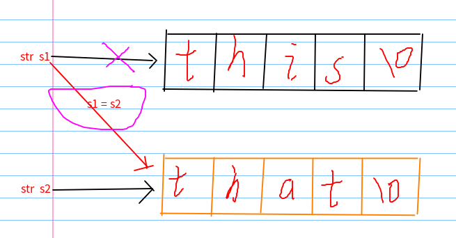

对于某些运算符号(+,-,*,/....)，我们不满足与它原有的操作方式，而是要在对特有对象(如负数的加减)进行使用，但是编译器会不允许这样做，因为会与操作符原本的类型不匹配而导致操作失败。因此我们需要对运算符进行重载，即赋予它新的意义，从而满足我们的使用需求。
如complex_a和complex_b是两个复数对象求两个复数的和, 希望能直接写：complexa + comple_b
运算符重载的目的是：扩展C++中提供的运算符的适用范围，使之能作用于对象。
同一个运算符，对不同类型的操作数，所发生的行为不同。
对于复数对象：complex_a + complex_b => 生成新的复数对象
对于整数：5 + 4 = 9
运算符重载的实质是函数重载，它可以重载为普通函数，也可以重载为成员，在对含有该运算法的表达式转换时，调用对应的运算符函数完成重载的操作。(依据参数的类型进行匹配)
1 class Complex
2 {
3 public:double real,imag;
4 Complex( double r = 0.0, double i= 0.0 ):real(r),imag(i) {}
5 Complex operator-(const Complex & c);
6 };
7 Complex operator + ( const Complex & a, const Complex & b)
8 {
9 return Complex( a.real+b.real,a.imag+b.imag); //返回一个临时对象
10 }
11 Complex Complex::operator-(const Complex & c)
12 {
13 return Complex(real - c.real, imag - c.imag); //返回一个临时对象
14 }
15 //重载为成员函数时，参数个数为运算符目数减一。
16 //重载为普通函数时，参数个数为运算符目数。
17 int main()
18 {
19 Complex a(4,4),b(1,1),c;
20 c = a + b; //等价于c=operator+(a,b)
21 cout << c.real << "," << c.imag << endl;//5,5,
22 cout << (a-b).real << "," << (a-b).imag << endl;//3,3
23 //a-b等价于a.operator-(b)
24 return 0;
25 }有时候希望赋值运算符两边的类型可以不匹配，比如，把一个int类型变量赋值给一个Complex对象，把一个 char * 类型的字符串赋值给一个字符串对象,此时就需要重载赋值运算符“=”。赋值运算符“=”只能重载为成员函数
1 class String
2 {
3 private:
4 char * str;
5 public:
6 String ():str(new char[1]) { str[0] = 0;}
7 const char * c_str() { return str; };
8 String & operator = (const char * s);
9 String::~String( ) { delete [] str; }
10 };
11 String & String::operator = (const char * s)
12 { //重载“=”以使得 obj = “hello”能够成立
13 delete [] str;
14 str = new char[strlen(s)+1];
15 strcpy( str, s);
16 return * this;
17 }
18 int main()
19 {
20 String s;
21 s = "Good Luck," ; //等价于 s.operator=("Good Luck,");
22 cout << s.c_str() << endl;
23 // String s2 = "hello!"; //error
24 s = "Shenzhou 8!"; //等价于 s.operator=("Shenzhou 8!");
25 cout << s.c_str() << endl;
26 return 0;
27 }
28 // 输出：
29 // Good Luck,
30 // Shenzhou 8!一个字符串的例子
1 String S1, S2;
2 S1 = “this”;
3 S2 = “that”;
4 S1 = S2;这几句的含义很清楚，一个S1串和S2串，并将S2赋值给S1,此时S1就和S2是一样的值。。但是....这样却不是我们理解的那种copy
它是在将s2赋值给s1的时候，将原来指向s1的指针取指向s2

原本指向'this'字符串的指针s1指向了'that'的字符空间，这样原来的'this'的字符空间就找不到了(变成内存垃圾)。
这就是浅拷贝。此时若我们释放s1所指向的存储空间，将会释放掉'that'，但是继续释放s2时，会发生问题(程序崩溃)，因为此刻s2指向的存储空间已经被s1所释放了
但是原来的'this'却孤独的无人问津，好惨 ...所以这样是很不妥的。。。或者，我们更换此刻s1的值，又导致'that'被更换了。。。就会一团糟。。
所以需要对原来的'='号进行重载(深拷贝：生成一个新的，值与当前的值一样的，不同地址空间的复制，互相的操作不相往来的那种，即真正意义上的copy)
1 class String
2 {
3 private:
4 char * str;
5 public:
6 String ():str(new char[1])
7 {
8 str[0] = 0;
9 }
10 const char * c_str()
11 {
12 return str;
13 };
14 String & operator = (const char * s)
15 {
16 delete [] str;//删除原来的str
17 str = new char[strlen(s)+1];//开辟足够大的存储空间
18 strcpy( str, s);//将s拷贝过来
19 return * this;//这样s1就会指向新分配的存储空间
20 };
21 ~String( )
22 {
23 delete [] str;
24 }
25 };但是，这样写还是有一点小问题的。如果我写了这个 s=s，就问又有小问题。这样在赋值时，左边的s先被delete，然后将右边s赋值给左边的s，但是右边的s已经没了啊？！？！？这样就出错了。所以代码要继续修改，成这样
1 String & operator = (const String & s)
2 {
3 if( this == & s) //
4 return * this;//防止出现自己给自己赋值出错的情况，直接返回就行了
5 delete [] str;
6 str = new char[strlen(s.str)+1];
7 strcpy( str,s.str);
8 return * this;
9 }注意，返回值类型是String & 型这样是为了对应原来 “=”运算符的左右两边类型
1 //如
2 a = b = c;
3 (a=b)=c; //会修改a的值
4 //分别等价于：
5 a.operator= (b.operator=(c));
6 (a.operator=(b)).operator=(c);
现在应该可以了。
但是。。。。
1 //为 String类编写复制构造函数的时候，会面临和不重载的 = 同样的问题，即默认构造函数会将=变成复制的操作，是浅拷贝！！所以我们用同样的方法处理。写个复制构造
2 String( String & s)
3 {
4 str = new char[strlen(s.str)+1];
5 strcpy(str,s.str)
6 }